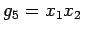

Inhalt Index DeskTop Bronstein

 Wahrscheinlichkeitsrechnung und Mathematische Statistik Mathematische Statistik Korrelation und Regression Mehrdimensionale Regression
Wahrscheinlichkeitsrechnung und Mathematische Statistik Mathematische Statistik Korrelation und Regression Mehrdimensionale Regression


Zwischen den Merkmalen und Y bestehe ein funktionaler Zusammenhang, der durch die theoretische Regressionsfunktion
beschrieben werden soll. Die Funktionen sind bekannte Funktionen von n unabhängigen Variablen. Die Koeffizienten aj sind konstant und treten in (16.163) linear auf. Man spricht deshalb im Falle von (16.163) auch von linearer Regression, obwohl die Funktionen gj beliebig sein können.
| Beispiel |
|
Die Funktion , ein vollständiges quadratisches Polynom in zwei Variablen mit und , ist ein Beispiel für eine theoretische Regressionsfunktion der linearen Regression. |